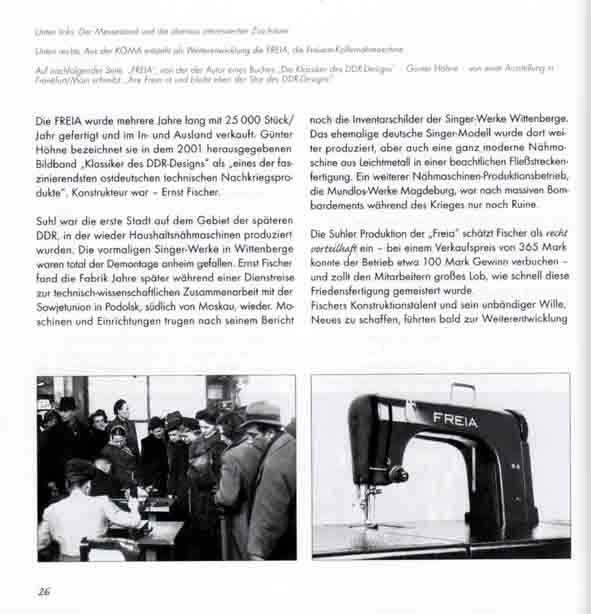

Kleine Suhler Reihe Nr. 12, Stadtverwaltung Suhl 2005
In der „Kleinen Suhler Reihe" Nr. 12 erschien im September 2005 ein Buch von Holger Uske, das die Biografie des Forschers und Technikers Ernst Fischer aus Suhl enthält. Reich illustriert, ist es zugleich ein Stück Suhler Geschichte, enthält es doch neben biografischen Erinnerungen aus dem reichen Leben des 1910 geborenen Ingenieurs vielfältige Details der lokalen Geschichte, in die sein Schaffen eingewoben war.
Bis heute legendär – in Büchern über Formgestaltung in der DDR immer erwähnt und anlässlich einer Ausstellung zu DDR-Design 2004 erneut bundesweit im Gespräch – sind die von Ernst Fischer konstruierten und im Suhler Thälmannwerk hergestellten Koffernähmaschinen, insbesondere die nach dem Freiarmprinzip so genannte „Freia".
Ernst Fischer erinnert sich:
„Schon bei Junkers/Flick waren die leitenden Mitarbeiter beizeiten zu Vorschlägen angehalten worden zur möglichen Auslastung der außergewöhnlich ausgeweiteten Produktionskapazitäten nach Kriegsende. Angesichts der gewaltigen Zerstörungen in den Großstädten war meine Idee, eine Einheitsküche zu fertigen mit einer Kochmöglichkeit und einer Küchenmaschinenausstattung. Diese sollte auf herausragende Getriebezapfen eines im Küchenschrank installierten einzigen Elektromotors aufsteckbar sein. Hinzu kam eine raumsparend unterzubringende Nähmaschine. Entwürfe dafür waren bereits in Leipzig entstanden. So bin ich damals auf die Nähmaschine gekommen."